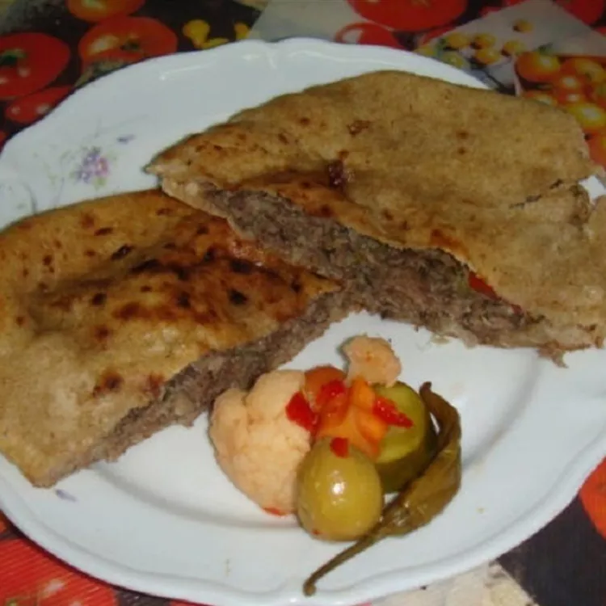

Hawawshi

Description
Hawawshi are Egyptian pita pockets. After cooking, consider adding lettuce, cheese, tomatoes, and jalapeño or serrano peppers into the pita pockets as well.
Ingrediants
- ½ pound ground beef
- 2 tomatoes, diced
- 1 large onion, diced
- 1 green bell pepper, diced
- 1 pinch paprika, or to taste
- 1 pinch ground coriander, or to taste
- 1 pinch ground cinnamon, or to taste
- 1 pinch ground nutmeg, or to taste
- salt and ground black pepper to taste
- 5 pita bread rounds, split
- 1 tablespoon corn oil
Steps
- Preheat the oven to 325 degrees F (165 degrees C).
- Heat a large skillet over medium-high heat. Cook and stir ground beef in the hot skillet until browned and crumbly, 5 to 7 minutes. Let cool slightly.
- Mix cooked beef, tomatoes, onion, bell pepper, paprika, coriander, cinnamon, nutmeg, salt, and pepper together in a large bowl until well combined. Stuff mixture inside of pita bread rounds.
- Brush tops with corn oil and wrap each in aluminum foil. Place on a baking sheet.
- Bake in the preheated oven until toasted and vegetables are softened, about 30 minutes.